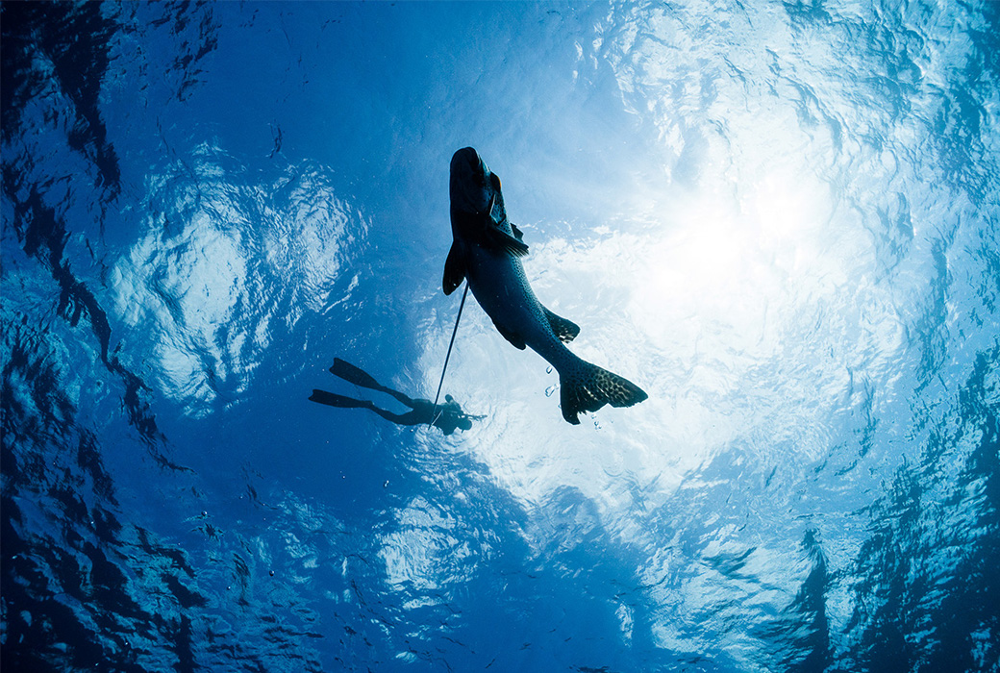

達悟族的漁獵文化 !

編輯部 2020/07/01
早上七點半，兩台小船搭載著10人，在藍色海面上畫出兩道白線，往小蘭嶼前進。途中見到幾隻飛魚躍出水面，在空中滑翔接著向右轉了一個彎，才落回水裡。原來飛魚飛翔時是可以轉彎的，我現在才知道。抵達小蘭嶼，第一個點是他們稱為「白毛之家」。一下水，立刻見識到小蘭嶼的流。雖然沒有到頂不動，但是把力氣都花在頂流上，也難以調整呼吸下潛了。這個點白毛的確很多，但因為流水太強，所以大家沒待多久就上船換點。蘭嶼人的船潛打魚跟我想像的不太一樣，每個點不會花太久的時間，順著流水走，飄到B點時，船就會接你上船。以及他們下水後，是會聚在一起，一起行動往同個方向打魚。在臺灣，即使是和朋友一起打魚，下水後也是各走各的，就怕彼此干擾、嚇走對方的魚。
達悟族的傳統
戴著滿滿魚獲返港，還不能立刻回家，因為接下來還要處理魚穫與分魚。蘭嶼傳統上是共享社會，因此「平分」這件事對於他們非常重要。不管你今天打到幾隻魚，只要有出海的人都會分到一樣的數量。